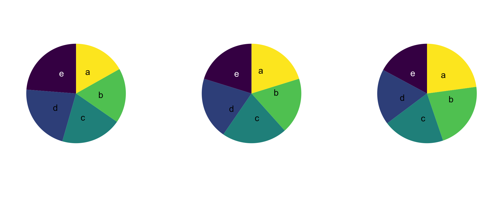
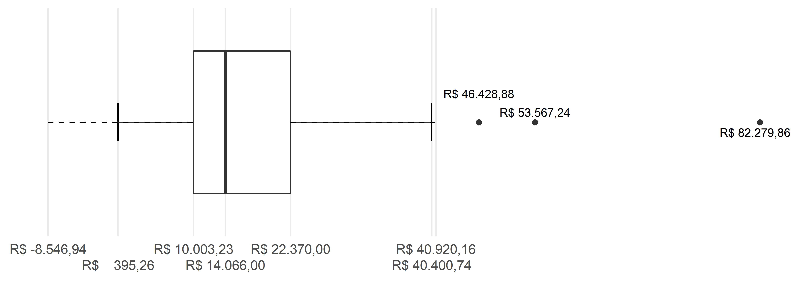
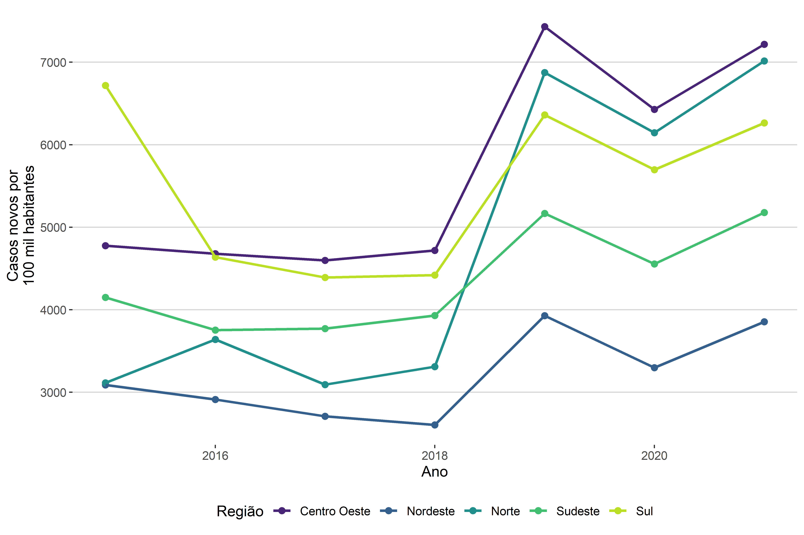

| valor | ||||
|---|---|---|---|---|
| 3373.20 | 29940.00 | 10000.00 | 12500.00 | 20000.00 |
| 5000.00 | 2546.50 | 1200.00 | 15000.00 | 52250.00 |
| 43873.64 | 15665.01 | 16294.08 | 11794.29 | 5843.75 |
| 4224.50 | 10000.00 | 463.31 | 15000.00 | 10000.00 |
| 52900.00 | 6125.96 | 9449.46 | 6299.77 | 54880.14 |
| 4241.39 | 17293.00 | 18710.00 | 26664.00 | 8299.46 |
| 8594.40 | 5158.70 | 10000.00 | 23390.00 | 11067.60 |
| 17407.35 | 15000.00 | 21650.34 | 4408.35 | 3612.00 |
| 9980.00 | 10450.00 | 30000.00 | 10925.93 | 1000.00 |
| 95735.92 | 31236.32 | 16050.00 | 39073.68 | 10000.00 |
| 13179.28 | 23082.44 | 13180.95 | 5000.00 | 17681.82 |
| 3677.88 | 1000.00 | 19224.00 | 52582.70 | 12105.00 |
| 15000.00 | 23289.31 | 1180.00 | 20000.00 | 26802.24 |
| 9980.00 | 6028.00 | 134311.00 | 2003.40 | 9730.00 |
| 20000.00 | 1617.07 | 40000.00 | 6810.80 | 31462.73 |
| 15144.08 | 16297.08 | 21236.52 | 2763.90 | 5450.00 |
| 10000.00 | 4036.91 | 20000.00 | 49964.81 | 12343.62 |
| 15000.00 | 13454.08 | 2944.42 | 990.51 | 2581.76 |
| 22267.55 | 13778.04 | 1000.00 | 6533.40 | 20531.12 |
| 8784.00 | 17284.38 | 84523.57 | 10000.00 | 15000.00 |
4 Visualização
No Capítulo 2, nós vimos questões sobre o método quantitativo, já no Capítulo 3, passamos do método às medidas. Nesta ocasião, vimos as medidas de duas formas diferentes: as medidas das observações consideradas individualmente e as medidas de resumo do conjunto de observações. Na parte das medidas individuais de cada observação, vimos que as características das observações podem ter duas naturezas distintas, ou elas são categóricas (pois indicam uma categoria de resposta), ou elas são quantitativas (pois indicam uma resposta numérica). Essas duas naturezas possíveis possuem suas subdivisões, mas o mais importante é considerarmos essas duas grandes classes. Em seguida, na parte de medidas resumo do conjunto das observações, tivemos que separar as medidas resumo das variáveis categóricas das medidas resumo das variáveis quantitativas.
Neste capítulo, ainda vamos nos valer desta distinção – entre variáveis categóricas e numéricas –, mas não vamos falar de medidas de resumo. O foco deste capítulo são as visualizações relacionadas a cada tipo de dado. Inicialmente, precisamos discutir para que servem as visualizações suas vantagens e desvantagens. Em seguida, vamos falar das visualizações específicas de cada tipo de variável (categórica ou quantitativa), começando pelas visualizações das variáveis categóricas para seguir então para as visualizações das variáveis quantitativas. Depois de olhar como representar individualmente as variáveis, vamos olhar para gráficos bivariados.
4.1 Para que servem visualizações?
Hoje em dia, nós vemos gráficos em vários contextos da vida cotidiana. Vemos gráficos em jornais, apresentações, livros, artigos de revista e em um monte de outros lugares. Mas nem sempre foi assim. Tratar de dados por meio de visualizações gráficas é apenas um jeito de contar a história. No capítulo anterior, vimos como contar a história, não por meio de gráficos, mas por meio de medidas de resumo. Se os gráficos nem sempre foram utilizados, cabe nos perguntarmos por que eles ganharam essa relevância nos dias atuais? O que eles trazem que outras formas de comunicar as informações (como em tabelas) não trazem?
Vamos começar essa discussão com uma citação importante, retirada do livro The Elements of Graphing Data [Os Elementos da Representação Gráfica dos Dados] (1985) do William S. Cleveland. Na sessão the power of graphical display [o poder da representação gráfica], Cleveland diz:
Representações gráficas são uma ferramenta excepcional para a análise de dados. A razão disso está bem resumida em uma sentença de uma carta de 1982 escrita pelo senhor W. Edwards Deming a mim: “Os métodos gráficos podem reter a informação nos dados”. Procedimentos numéricos de análise de dados – tais como a média, o desvio padrão, coeficientes de correlação e teste-t – são essencialmente técnicas de redução dos dados. Os métodos gráficos complementam essas técnicas. Os métodos gráficos tendem a mostrar conjuntos de dados como um todo, permitindo-nos resumir o comportamento geral e estudar o detalhe. Isso nos leva a uma análise de dados mais minuciosa. Uma razão para as representações gráficas conseguirem reter as informações dos dados é que uma grande quantidade de informação quantitativa pode ser exibida e absorvida1.
Para dar um exemplo do que significa conseguir “exibir e absorver” informações quantitativas, e para explicar também o que significa “técnicas de redução de dados”, vamos olhar para um exemplo, no qual nós comparamos três formas de apresentar os mesmos dados. Os dados expostos dizem respeito aos valores das causas de ações de consumo.
| medidas | valores |
|---|---|
| média | 7654.10 |
| desvio padrão | 174.82 |
| mínimo | 63.31 |
| quartil inferior | 981.94 |
| mediana | 2421.81 |
| quartil superior | 0.00 |
| máximo | 34311.00 |
As três apresentações de dados que fizemos foram, respectivamente, uma tabela de observações, apresentando 100 valores de causa em ações de consumo; seguido das medidas resumo dessas observações; finalizando com um histograma dessas observações. O que queremos discutir é o que a apresentação gráfica nos mostra que as demais formas não nos mostram?
A primeira apresentação dos dados nos diz muito pouco. Por mais que tenhamos uma visão de todos os dados, não conseguimos tirar conclusão alguma sobre eles. As informações ali estão muito cruas. É difícil de ordenar as informações e de observar tendências gerais.
Na segunda forma de apresentar os dados, todo aquele conjunto imenso de dados foi reduzido a algumas poucas estatísticas de resumo. No caso, escolhemos mostrar a média, o desvio padrão e algumas medidas de posição importantes (o mínimo, o máximo, os quartis inferior e superior e a mediana). Nesse caso, perdemos a noção do todo (pois não vemos mais cada uma das observações), para olharmos para tendências gerais. Essas medidas nos permitem olhar para algumas tendências importantes, por exemplo, conseguimos perceber que, como a média está mais à direita do que a mediana, pois R$ 7654.1 (média) é maior do que R$ 2421.81 (mediana), que a distribuição não é simétrica, mas que existem pontos à direita que estão “puxando” a média para a direito, enquanto a mediana, que é robusta como vimos, não está recebendo efeito dessas observações à direita. Confirmamos essa mesma tendência pela observação de que o desvio padrão é muito maior do que a média.
Todas essas conclusões que tiramos a partir das medidas resumo nos levam a perceber que a distribuição dos valores de causa de ações de consumo possui uma distribuição assimétrica para a direita (ou seja, muitos dados concentrados próximo de zero, e poucos dados muito distantes do zero). Acontece que o processo para chegarmos a essa conclusão não foi intuitivo, ele necessitou de algumas análises anteriores.
É com esse problema em mente que podemos olhar para o gráfico que está apresentando os mesmos dados. Duas características são importantes da representação gráfica pelo histograma: (a) o gráfico não “reduz” os dados a algumas poucas medidas, mas ele exibe todas as observações, aproximando-se, dessa forma, da primeira apresentação dos dados (isto é, a tabela de observações); (b) ao mesmo tempo em que o gráfico mostra todas as observações, ele ainda consegue indicar tendências gerais da distribuição dos dados, nesse sentido, aproximando-se da segunda apresentação dos dados (isto é, a tabela de medidas resumo). Aquela conclusão que tiramos a partir das medidas resumo (de que a distribuição é assimétrica para a direita, pois ela possui muitos dados concentrados próximo de zero e poucos dados distantes do zero) é reforçada no gráfico. A diferença é que conseguimos chegar a essa conclusão de uma forma muito mais intuitiva. É por essa razão que Cleveland diz que “uma grande quantidade de informação quantitativa pode ser exibida e absorvida”, com destaque para a palavra “absorvida”.
A partir desse exemplo, conseguimos compreender algumas características importantes das visualizações gráficas: elas conseguem manter um olhar para cada uma das observações (sem reduzir os dados a algumas poucas medidas), e, ao mesmo tempo, conseguem apresentar tendências gerais da distribuição dos dados de uma forma de fácil absorção e compreensão por aquele que visualiza.
Com essas características em mente, então, podemos prosseguir à próxima pergunta: para que servem visualizações?. Há duas respostas importantes: as visualizações gráficas servem para investigar os dados, bem como servem para comunicar resultados. Vamos olhar para as duas funções
4.1.1 Detetive de dados - Análise exploratória de dados
Uma forma de encarar as visualizações gráficas é criar visualizações a fim de se obter evidências e pistas para analisar outros fenômenos. Isso é o que Tukey (1977) chama de “quantitative detective work” [trabalho de detetive quantitativo]. Nesse sentido, a visualização de dados não é um fim em si mesmo, mas é uma etapa para um processo de compreensão maior. Nesse sentido, usamos visualizações gráficas para descobrir como um determinado dado se distribui; e a partir dessa informação, podemos perceber que talvez seja adequado fazer uma transformação de variável. Por exemplo, ao analisar o valor da causa, podemos nos deparar com a seguinte distribuição, conforme a Figura 4.2.
Não queremos colocar um gráfico desses em um relatório, ou em um artigo a ser publicado. Mas esse gráfico é importante para percebemos que o eixo x (valor) precisa passar por um ajuste. O ajuste que vamos fazer é colocar o valor em escala logarítmica. Essa é uma transformação muito comum. Mais para frente veremos por que, quando e como fazer essa transformação, por hora, basta sabermos que o primeiro gráfico foi um indicativo de que precisávamos mudar a escala da variável valor. Esse gráfico conseguiu nos indicar isso pois ele nos revelou a distribuição das observações sobre essa variável. E ao saber a distribuição, conseguimos padronizar melhor os dados. Na Figura 4.3, vemos as mesmas informações dispostas na Figura 4.2, ajustadas com log.
A partir da Figura 4.3, conseguimos observar uma distribuição totalmente diferente daquela expressa na Figura 4.2. Essa nova figura tem alguns problemas de interpretação, por exemplo, o que significa que o valor da causa ser log 8? A informação não está equivocada, mas ela só está de difícil interpretação. O que queríamos mostrar é que a Figura 4.2 foi usada, não para apresentar os dados que ela continha, mas como um meio para chegarmos à Figura 4.3.
São usos deste tipo que aqui estamos chamando de uma análise exploratória de dados. Nesse sentido (de exploratório), os gráficos servem de instrumento de investigação de relações. Veremos ao longo do livro várias formas de usar gráficos nesse sentido, tais como testes de normalidade, verificar pressupostos de modelos, descobrir outliers, entre muitos outros.
4.2 Comunicadora de dados - Apresentação de dados
Outra função que podemos dar à visualização de dados é a comunicação dos resultados. Bons gráficos devem ser gráficos que consigam ser facilmente compreendidos; são gráficos claros e intuitivos. Existe uma série de estudos sobre como construir gráficos para comunicação, assim como existem muitos exemplos, principalmente no jornalismo, de gráficos que contam boas histórias.
Nota
Recomendamos aqui a leitura de Cleveland, William S. The Elements of Graphing Design. California: Wadsworth Advanced Book Program. 1985; ou para um resumo e aplicação prática de Cleveland, recomendamos Kozak, Marcin. Basic principles of graphing data. Sci. Agric. (Piracicaba, Braz.), v.67, n.4, p.483-494, July/August 2010. Neste artigo de Kozak, ele resume os princípios elencados por Cleveland em The Elements of Graphing Data, bem como fornece valiosos exemplos de como esses princípios podem melhorar a apresentação gráfica.
Nota
Aqui recomendamos os gráficos do Nexo Jornal(https://www.nexojornal.com.br/grafico/); a sessão Igualdades da Revista Piaui; os gráficos do New York Times; as reportagens do Núcleo de Jornalismo; e, por fim, esta reportagem do Estadão sobre adoção de crianças. Todos os sites foram acessados em 28/04/2022.
Temos que ter alguns cuidados nessa parte de comunicação dos resultados. A comunicação é uma etapa que, se feita de forma equivocada, pode não conseguir passar a interpretação correta dos resultados, ou ainda, se for feita de forma maliciosa, pode passar informações falsas.
Nota
Ver o exemplo discutido por Cleveland, 1985, sobre o gráfico que o Carl Sagan apresentou em seu livro Os Dragões do Éden a respeito da relação entre a proporção da massa do cérebro em relação à massa do corpo e a inteligência de diversas espécies. O exemplo se encontra em na sessão 1.3. The Challenge of Graphical Display do livro Cleveland, William S. The Elements of Graphing Design. California: Wadsworth Advanced Book Program. 1985.
Nota
Ver o artigo de Caio Lente no blog da Curso-R, em que ele descreve como os dados podem mentir, ao se analisar uma imagem sobre o desenvolvimento econômico da Argentina após a Reforma Constitucional que ensejou o início da Justiça Social. O artigo está disponível neste link, acessado em 28/04/2022.
4.3 Visualizações em espécie
Tendo em mente as características e funções das visualizações, podemos prosseguir ao detalhamento de algumas espécies de visualizações. Existem muitos tipos de gráficos. Você pode ver uma tentativa de documentação completa desses gráficos em From data to Viz. Não vamos falar de todos esses gráficos, mas apenas dos tipos mais frequentes. Da mesma forma como nós dividimos a explicação das medidas de resumo entre as explicações das medidas para variáveis categóricas e as medidas para variáveis numéricas, vamos, novamente, seguir este padrão, de modo que apresentaremos:
- Visualizações para variáveis categóricas
- Gráficos univariados
- Gráficos bivariados
- Com explicativa categórica
- Com explicativa numérica (só faz sentido regressão)
- Visualizações para variáveis numéricas
- Gráficos univariados
- Gráficos bivariados
- Com explicativa categórica
- Com explicativa numérica
Para cada gráfico, iremos ver (i) como desenhar o gráfico e (ii) como interpretá-lo. A explicação do ponto (i) já diz muito sobre o ponto (ii), mas iremos tentar discriminar cada uma das análises especificamente.
Antes de continuar as explicações, precisamos explicar o que significa ser um gráfico univariado ou bivariado?.
Um gráfico univariado representa apenas uma única variável nele. Isso não significa que o gráfico tenha apenas um eixo. Na verdade, os gráficos univariados normalmente têm dois eixos. Então a quantidade de variáveis não diz exatamente respeito à quantidade de eixos.
Já o gráfico bivariado representa duas variáveis nele, em que uma variável é a variável resposta e a outra variável é a variável explicativa. A variável resposta é aquela que nós queremos compreender; e a variável explicativa é a variável que queremos usar para explicar a variável resposta.
Vamos dar um exemplo para compreender o que são as variáveis explicativa e resposta. Ao analisar instância recursal, podemos nos interssar por ver se a reforma da decisão de primeiro grau é afetada pelo valor da causa. Então surge a seguinte pergunta de psquisa: será que causas de valores maiores tendem a ser menos reformadas? Veja que a relação que queremos avaliar tem uma ordem certa: importa dizer que é o valor da causa que explica a reforma, e não o contrário, de que é a reforma da sentença que explica o valor da causa. Essas duas relações são possíveis de serem analisadas (apesar de que faz pouco sentido teórico explicar o valor da causa pela reforma). O importante é notar que essas duas relações são distintas, e aquilo em que elas se distinguem é justamente o que cada uma delas considera como variável resposta e como variável explicativa. Na pergunta de se a reforma da sentença é afetada pelo valor da causa, a variável “reforma” é a variável resposta (ou seja, a variável que queremos compreender); e a variável “valor da causa” é a variável explicativa (ou seja, a variável que queremos que explique a variável resposta). Em termos matemáticos, a variável resposta é a variável Y e a variável explicativa é a variável X.
4.3.1 Visualizações de variáveis categóricas
4.3.1.1 Gráficos univariados
Os gráficos univariados de variáveis categóricas são marcados por conterem sempre duas informações: as categorias analisadas e a contagem ou proporção dessas categorias. Por mais que os gráficos tenham duas dimensões, eles não contém duas “variáveis”. A única variável são as categorias; a contagem/proporção é simplesmente um atributo dessa variável. Vamos ver duas visualizações mais difundidas desse tipo de variável. Para mais exemplos, ver From data to Viz.
4.3.1.1.1 Gráfico de barras
O gráfico de barras é o principal meio de visualizar variáveis categóricas. Ele contém dois eixos: a variável categórica e a contagem/proporção. Não importa o eixo em que cada uma dessas informações está. A variável pode ser apresentada tanto no eixo x (horizontal), como no eixo y (vertical, também chamado de gráfico de colunas), conforme a Figura 4.4.
O gráfico é simples, bem como a sua interpretação. Basta verificar a contagem de cada categoria. Usualmente, tira-se desses gráficos a conclusão de quais grupos são mais relevantes, qual é a tendência de resposta de determinada categoria. No caso em tela, observamos que os processos de consumo, em segunda instância, tendem a não ser reformados.
4.3.1.1.2 Gráfico de setores (pizza)
O segundo tipo de visualização categórica são os gráficos de setores, ou gráficos de pizza (ou pie charts, em inglês). Esta visualização é uma forma muito frequente de apresentar os dados. A diferença dos gráficos de pizza para os gráficos de barras é que eles apresentam informações dispostas, não lado a lado, mas dentro de um círculo. O círculo inteiro compreende todas as observações possíveis, enquanto as suas ramificações (ou pedaços de pizza) representam a parcela do todo que diz respeito a uma determinada categoria.
Esse gráfico, apesar de ser amplamente utilizado, ele traz um problema de visualização. Por mais que o gráfico funcione bem para representar duas ou três categorias, com mais categorias do que isso ele passa a não ser muito funcional.
Aqui vamos replicar o exemplo elaborado pelo Data to Viz em The issue with pie chart. O exemplo que eles dão parte da seguinte pergunta: Tente descobrir nos três grupos abaixo qual é o grupo com mais observaçẽs.

A resposta deveria ser, para a primeira pergunta, que no primeiro gráfico, o maior grupo é o E; no segundo, o C; e no terceiro, o A. Acontece que, por causa da forma como os dados estão dispostos, é difícil chegar a essa conclusão, enquanto, se repetíssemos a pergunta para os mesmos dados dispostos em barras, essa pergunta seria trivial.

Então, a questão com os gráficos de pizza é que eles possuem um iminente problema de comunicação e interpretação. A assimilação desses gráficos não é intuitiva, muitas vezes, sequer possível a olho nu. Dessa forma, deve-se preferir, na maioria das vezes, a utilização de gráficos de barras no lugar de gráficos de pizza. Recomenda-se que se utilize gráficos de pizza para representar 2 ou, no máximo, 3 categorias. Mais do que isso, a visualização fica prejudicada.
4.3.1.2 Gráficos bivariados (com explicativa categórica)
4.3.1.2.1 Gráfico de barras
O mesmo gráfico de barras que pode representar uma única variável, pode ser usado para representar duas variáveis categóricas. Neste caso, não mudamos os eixos. O que fazemos, no lugar, é “quebrar” cada uma das categorias do eixo categórico em algum subgrupo. Por exemplo, na Figura 4.5, pegamos as categorias referentes a “decisões de segunda instância” e quebramos pelo tipo de litígio. Há 4 tipos de litígio possíveis: uma pessoa física (PF) no polo ativo contra alguma não-pessoa física (nPF), tal como uma empresa, um espólio ou o Poder Público (PF-nPF); uma pessoa física contra outra pessoa física (PF-PF); uma pessoa não física no polo ativo, contra uma pessoa física (nPF-PF); ou uma disputa entre duas pessoas não físicas (nPF-nPF).
Essa “quebra” pode ser feita de diversas maneiras. A escolha entre cada uma delas dependerá dos propósitos do gráfico, ou até mesmo do estilo do próprio pesquisador. A Figura 4.6 traz outra forma de realizar essa quebra.
O que precisamos compreender é a complexidade que essa segunda variável adiciona à interpretação do gráfico. No gráfico de barras univariado, podíamos comparar apenas o tamanho de cada um dos desfechos da sentença. Na Figura 4.7, damos um exemplo de um tipo de comparação possível a partir do gráfico univariado, em que comparamos os os grupos “Reformou” com “Não reformou”.
Com os gráficos de barras bivariados, outras comparações são possíveis. No caso, podemos realizar 2 novas comparações. A primeira comparação possível é aquela em que fixamos a variável de interesse para compararmos a variável explicativa. No nosso caso, isso significa comparar, dentro de um único desfecho da sentença, alguns tipos de litígio. Vemos um exemplo desta comparação na Figura 4.8.
A segunda nova comparação possível é aquela em que fixamos a variável explicativa, ou seja, a variável de quebra, e a analisamos através de todas as categorias de interesse. Vemos um exemplo disto na Figura 4.9, em que olhamos para o tipo de litígio “PF-nPF” para todos os três tipos de desfechos possíveis das decisões de segunda instância.
Notemos, então, que adicionar uma nova variável ao gráfico de barras, para torná-lo bivariado, aumenta a sua complexidade de análise. Isso pode ser bom, pois nos permite visualizar novas relações, mas também pode ser ruim, na medida em que dificulta a interpretação do gráfico.
4.3.1.3 Gráficos bivariados (com explicativa numérica)
Nos gráficos de barras bivariados que mostramos acima, a variável explicativa era categórica (no caso, “Tipo de litígio”). A partir dessa variável explicativa categórica, nós pudemos “quebrar” as barras em categorias menores. Vimos diversas formas de realizar essa quebra, bem como as novas interpretações que isso permitia realizar.
Poderíamos nos perguntar, então, o que aconteceria se, no lugar de “Tipo de litígio”, colocássemos alguma variável numérica contínua, tal como “valor da ação”? Como o gráfico ficaria?
Temos de ter cautela com essa pergunta, pois, por mais intuitivo que seja se fazer uma pergunta dessas, esse tipo de visualização só faz sentido em um contexto bem específico: o de regressão. Veremos regressões apenas mais para frente do livro. Quando chegarmos lá, poderemos completar essa explicação.
4.3.2 Visualizações de variáveis quantitativas
4.3.2.1 Gráficos univariados
No caso das variáveis quantitativas, também temos formas de representá-las de forma univariada. São duas as visualizações mais frequentes: o histograma e o boxplot.
4.3.2.1.1 Histograma
O histograma assemelha-se muito ao gráfico de barras. Eles não devem, entretanto, ser confundidos. O histograma representa variáveis quantitativas contínuas, enquanto o gráfico de barras representa categorias. A diferença essencial é que, enquanto no gráfico de barras nos interesse o tamanho de cada barra, no histograma nos interessa mais a distribuição geral dos dados ao longo do eixo. A Figura 4.10 traz um exemplo de um histograma com o valor de tempo de cada processo em dias.
Trabalhando em cima deste exemplo, vamos compreender (a) como se formam as barras do histograma; (b) como interpretar este gráfico; (c) propriedades do histograma; (d) problemas de visualização e transformação dos dados.
A começar pela formação das barras do histograma, precisamos voltar um pouco na natureza das variáveis quantitativas. Existem dois tipos de variáveis quantitativas: as discretas e as contínuas. As discretas representam apenas a contagem de certo número, por exemplo, quando se deseja saber a quantidade de juízes que determinado tribunal possui. Essa quantidade, que expressa apenas uma contagem, será uma variável discreta. As características dessa variável são que ela não pode assumir nem valores negativos, nem valores fracionados, mas apenas valores inteiros. As variáveis contínuas, por outro lado, seriam variáveis que expressam números reais, podendo por natureza envolver números negativos ou fracionados. Acontecem alguns casos em que os números negativos não fazem sentido no mundo real, por exemplo, quando temos uma variável contínua sobre tempos. Por exemplo, se tivermos uma variável sobre o tempo que demora para um processo morrer, não faz sentido que essa variável indique “-100 dias”.
Essa recapitulação dos tipos de variáveis quantitativas é importante porque os histogramas representam apenas variáveis quantitativas contínuas, e isso traz um problema para a representação gráfica. O problema é, se eu for fazer uma barra para cada valor possível, tratando eles como categorias próprias, eu teria, teoricamente, infinitas barras. Por exemplo, eu poderia ter, em uma variável de valor, uma barra para todos os processos cujo valor da ação é de R$ 1,00; e depois outra barra para os valores de R$ 1,10. Mas entre uma barra eu poderia ter R$ 1,05; ou ainda 1,025, etc.
A fim de eliminar esse problemas das barras infinitas, cada barra do histograma acaba representando um intervalo, de modo que nenhuma barra represente um único valor, mas sim um intervalo de valores. Assim, no lugar de uma barra para o valor de R$ 1,00, temos uma barra para os valores de R$ 1,00 a R$ 2,00, por exemplo. O tamanho desse intervalo é variável, não é fixo; ele não está predeterminado. O que precisamos saber deste intervalo é que ele é fechado no início e aberto no final, ou seja, se tivermos o intervalo de R$ 1,00 a R$ 2,00 e outro intervalo de R$ 2,00 a R$ 3,00, isso significa que um processo cujo valor da causa seja R$ 2,00, ele estará dentro do segundo intervalo e não do primeiro, mas o valor da causa for de R$ 1,99, ele estará dentro do primeiro intervalo mesmo.
A representação dos intervalos segue uma notação específica: para os intervalos fechados, representamos um colchete voltado para o número; para os intervalos abertos, um colchete “de costas” para o número. A seguir, damos alguns exemplos para compreender melhor essa notação.
- [1,10] significa que o intervalo é fechado no 1 (porque usamos um colchete) e fechado no 10 (porque usamos um colchete);
- [1, 10) significa que o intervalo é fechado no 1 (porque usamos um colchete) e aberto no 10 (porque usamos um parêntese);
- (1, 10] significa que o intervalo é aberto no 1 (porque usamos um parêntese) e fechado no 10 (porque usamos um colchete);
- (1, 10[ significa que o intervalo é aberto no 1 (porque usamos um parêntese) e aberto no 10 (porque usamos um parêntese).
A partir da criação dos intervalos, cada uma das observações da base será colocada dentro de uma das categorias especificadas. Assim, cada um dos intervalos terá uma contagem (igual ao caso do gráfico de barras). Todas as categorias devem ter exatamente o mesmo tamanho. Assim, se foi criada uma categoria que vai do 1 ao 10, então a próxima categoria tem que ser do 10 ao 19, pois elas devem ter exatamente o mesmo tamanho.
Mexer no tamanho das categorias pode gerar histogramas diferentes. Veja o mesmo histograma do exemplo acima com três variações do tamanho dos intervalos de cada barra na Figura 4.11.
Uma vez que descobrimos como que as barras do histograma são criadas, podemos passar para o tópico seguinte: como interpretar? No caso do histograma, não nos interessa muito saber a contagem exata de cada “categoria” (até porque as barras não representam categorias, mas apenas intervalos arbitrários). A contagem específica de cada categoria era uma informação importante quando olhávamos para o gráfico de barras, mas no histograma, não é essa informação por que estamos buscando. O essencial do histograma é ver a distribuição dos dados como um todo, e não cada barra.
Voltando ao nosso exemplo, conseguimos ver que existe uma barra cuja contagem de casos está acima dos 300 casos. Não nos importa saber a contagem exata desta barra. Ao que devemos nos atentar é que a distribuição do tempo dos processos se dá de forma concentrada na esquerda. Esse tipo de distribuição chamamos de distribuição assimétrica para a direita. A indicação da assimetria diz respeito à localização da “cauda” do gráfico. No nosso caso, temos uma série de valores concentrados no início, em tempos mais baixos, e alguns poucos casos esparramados no fim, em tempos mais longos. Então, quando dizemos que a distribuição é assimétrica “para a direita” estamos nos referindo à assimetria que estes casos da cauda do gráfico criaram.
Como estamos falando, o mais importante dos histogramas é verificar a distribuição dos dados, e não a contagem específica de cada barra. O que precisamos falar ainda é: quais são as distribuições possíveis? Existem muitas distribuições, mas destacamos 3 principais: a distribuição simétrica, a distribuição assimétrica para a direita e a distribuição assimétrica para a esquerda. Essas distribuições estão resumidas na Figura 4.12.
A propriedade importante do histograma diz respeito à posição relativa entre média e mediana. Queremos sempre determinar onde os dados estão concentrados. Para tanto, as medidas de resumo que indicam tendência central são excelentes. Lembrando, temos três medidas: a média, a mediana e a moda. A média e a mediana se diferenciam porque a mediana é considerada robusta (isto é, ela não era influenciada pelos valores extremos), enquanto a média é considerada uma medida não robusta. Assim, quando estamos diante de distribuições assimétricas – sejam elas para a esquerda ou para a direita –, a média será afetada pelos valores que estão na cauda, enquanto a mediana não. Essa diferença entre as duas medidas cria um importante atributo para interpretarmos o histograma. O que acontece é que, em distribuições simétricas, a média e a medina irão se sobrepor, assumindo o mesmo valor, ou valores muito próximos, enquanto, no caso das distribuições assimétricas, os valores da média e da mediana irão ficar descompassados. Assim, podemos visualizar, a partir do histograma, como que a média e a mediana se comportam, conforme a Figura 4.13.
A partir desses três histogramas, podemos tirar as seguintes propriedades:
- Distribuição assimétrica para esquerda: Média < Mediana
- Distribuição simétrica: Média = Mediana
- Distribuição assimétrica para direita: Média > Mediana
Por fim, podemos nos atentar à última questão com os histogramas: problemas de visualização e a transformação dos dados. O que acontece é que muitas variáveis possuem uma distribuição muito assimétrica, de forma que existem muitos valores concentrados em um pico e pouquíssimos valores dispersos em uma grande amplitude. Isso é extremamente frequente em todos os dados envolvendo valores. Até agora, estávamos usando como exemplo apenas gráficos com tempos, justamente porque as visualizações com valores são muito difíceis. Na Figura 4.14, temos um exemplo do que acontece com os valores na base de dados de consumo.
O que acontece é que existem pouquíssimos valores muito altos (maiores do que R$ 40 milhões) e uma massa de casos com valores muito baixos. Uma assimetria deste tamanho faz parecer que todos os casos possuem um valor de causa igual a zero. Entretanto, isso não é verdade. Se, simplesmente retirarmos da base 10% dos processos, envolvendo os maiores valores, obtemos o histograma da Figura 4.15.
A partir dessa figura conseguimos perceber que são somente os processos acima do quantil(0.9) que estão prejudicando a visualização do histograma. Diante desse problema, o que devemos fazer?
Uma solução já foi dada, que foi justamente excluir da base os processos que estão atravancando a análise e depois analisá-los separadamente. Temos um bom exemplo disto na seguinte reportagem do Nexo Jornal O saldo do cinema brasileiro. Essa solução pode servir para alguns casos, principalmente quando estamos falando da função comunicativa das visualizações. Entretanto, para a função exploratória, essa função nem sempre é adequada, pois, como ela fragmenta a base, ela perde de vista a distribuição do todo.
Uma solução muito frequente para este problema, então, é ao invés de excluir os dados, transformá-los. A transformação mais comum é a transformação em log10. No nosso exemplo, iríamos então transformar os valores exatos de cada causa, para os valores em log de base 10. Assim, aquele histograma da Figura 4.15 ficaria com esta aparência depois da transformação em log, conforme a Figura 4.16.
Por mais que a visualização das barras fique melhorada, a interpretação deste gráfico fica prejudicada, pois agora temos que interpretar o valor em log. O que significa que existe uma concentração de processos com valor em log igual a 4? Isso significa que existe uma concentração de processos em torno de \(10^4=10.000\), ou seja, em torno de R$ 10.000,00. Por mais que a interpretação fique dificultada, a visualização decerto fica melhor.
A melhor alternativa para se apresentar um histograma em escala logarítmica, talvez seja a de substituir os valores em log pelos valores reais. A única atenção que temos de ter neste caso é para não se deixar confundir com a escala do gráfico (Figura 4.17: a escala continua sendo logarítmica, apesar de as marcações não indicarem isso.
4.3.2.1.2 Boxplot
A próxima visualização importante para variáveis numéricas é o boxplot. O boxplot é um gráfico que apresenta as estatísticas resumo de uma determinada variável, ao invés de apresentar as unidades amostrais, tal como ocorre no histograma. Para explicar o boxplot, vamos falar de 3 pontos: (a) como se forma o boxplot; (b) como interpretar este gráfico; e (c) problemas relacionados a ele.
Para tratar da formação do boxplot, é importante começar visualizando-o, para que possamos compreender as diferentes partes que o compõem.

Com a imagem do boxplot em mente, podemos dissecá-lo em três partes, para fins didáticos: o centro, os bigodes e os pontos.
O centro é o retângulo que fica no meio do boxplot. Esse retângulo é definido por três parâmetros. Para entendê-los, precisamos nos lembrar dos quantis empíricos e, mais especificamente, dos quartis. Essa matéria foi vista no capítulo anterior, mas ela é importante neste contexto porque o centro do boxplot é definido justamente pelos três quartis: o quartil superior, a mediana e o quartil inferior. Basicamente, o perímetro externo do centro do boxplot é delimitado pelos quartis superior e inferior e a linha que corta o retângulo boxplot é a mediana. Não necessariamente a mediana está ao centro do retângulo. Mais para frente veremos o que significa a posição da linha mediana dentro do retângulo. O que importa, neste momento, é saber que o centro do boxplot é definido pelos três quartis empíricos, sendo que a mediana representa a linha que corta o retângulo central.
A seguir, a segunda parte do boxplot são os bigodes. Existem dois bigodes, um para cima e outro para baixo. Ambos se formam da mesma maneira: eles se estendem do perímetro externo do retângulo central até 3/2 do IQR. Vale lembrar que, conforme vimos no capítulo anterior, IQR (Interquartile Range) representa a amplitude dos quartis superior e inferior, ou seja, ele é calculado pela diferença do quartil superior (75%) com o quartil inferior (25%). Dessa forma, o IQR diz qual é a amplitude em que se encontram os 50% centrais dos dados. Lembrando desta informação, podemos voltar aos bigodes. Os bigodes são linhas que se estendem desde a área externa do retângulo central até um ponto que representa 3/2 do IQR. O bigode inferior, se inicia do quartil inferior e vai até -3/2 IQR; enquanto o bigode superior se inicia do quartil superior e vai até 3/2 IQR.
Por que usamos o valor de 3/2 do IQR? Isso acontece porque, em distribuições normais, 3/2 do IQR representa 99% de todos os dados. Essa afirmação faz pouco sentido agora, entretanto, mais para frente do livro, daremos sentido a ele, definindo melhor o que significa uma distribuição normal e como podemos saber que 3/2 do IQR representa 99% dos dados. Essa última afirmação está relacionada a algumas propriedades da distribuição normal.
É preciso saber também, sobre os bigodes, que nem sempre o bigode, de fato, vai até os 3/2 do IQR. Isso se dá porque, no boxplot, o bigode pode ir até os 3/2 do IQR, entretanto, ele só irá até a última observação antes de esse ponto chegar. Isso significa que mesmo se existirem pontos além dos 3/2 do IQR, se o último ponto antes desse limite estiver, por exemplo, a \(\frac 1 2\) do IQR, então o bigode vai andar somente até esse ponto.
E se existir algum ponto além dos 3/2 do IQR? Então o bigode irá representar as observações antes de se passar desse limite; e os valores que passarem deste limite serão representados com pontos. Daí a explicação da terceira parte do boxplot, os pontos. Os pontos, nada mais são do que os dados que estão além dos 3/2 de IQR, seja para cima ou para baixo. Se não houver dados acima desses 3/2 de IQR, então não haverá pontos. Essa é a única parte do gráfico que pode ou não aparecer, todas as demais são partes essenciais do gráfico.
Antes de prosseguirmos a explicação para outras questões relacionadas ao boxplot, vamos montar parte a parte de um boxplot a partir de um conjunto de dados. O conjunto de dados que utilizaremos é a base consumo. Essa base contém 1000 observações, cuja unidade amostral são processos de consumo. Vamos, para os fins dessa explicação, amostrar somente 30 processos.
O primeiro passo para montar o boxplot é determinar os eixos do boxplot. É preciso ter clareza de que o boxplot que estamos vendo agora é univariado, ou seja, ele possui apenas um eixo. Este eixo é o eixo que contém os valores da variável numérica. No nosso caso, será o eixo de valor da causa. Não importa se esse eixo for o x ou o y, pois o boxplot pode ser apresentado tanto na horizontal como na vertical.
O segundo passo é realizar os cálculos das estatísticas de resumo do nosso conjunto de dados. São 5 informações de que precisamos (máximo, mínimo, mediana, quartil superior e inferior), e outras 7 medidas decorrentes dessas 5 (IQR, o limite superior do bigode, o limite inferior do bigode, o ponto superior, o ponto inferior e os potenciais outliers nos limites inferior e superior). A Tabela 4.3 resume essas informações.
| medidas | parte do boxplot | valores |
|---|---|---|
| valor máximo | bigodes | R$ 82.279,86 |
| quartil superior | centro | R$ 22.370,00 |
| mediana | centro | R$ 14.066,00 |
| quartil inferior | centro | R$ 10.003,23 |
| valor mínimo | bigodes | R$ 395,26 |
| IQR | bigodes | R$ 12.366,77 |
| quartil superior + 3/2 IQR | bigodes | R$ 40.920,16 |
| quartil inferior - 3/2 IQR | bigodes | R$ -8.546,94 |
| último ponto superior | bigodes | R$ 40.400,74 |
| último ponto inferior | bigodes | R$ 395,26 |
| quantidade de pontos superiores | pontos | 3 pontos |
| quantidade de pontos inferiores | pontos | 0 pontos |
A começar pelo centro do boxplot, ele está contido dentro dos limites dos quartis superior e inferior e, portanto, ele começa, no ponto R$ 10.003,23 e acaba no ponto R$ 22.370,00. A mediana, que corta o retângulo central, está no ponto R$ 14.066,00. Percebemos já, com isso, que a mediana não está no centro. O retângulo central está representado na Figura 4.19.
A seguir, para construir os bigodes, temos que calcular o IQR. O IQR é simplesmente a diferença do quartil superior com o quartil inferior, dando R$ 12.366,77. Então 3/2 do IQR representa R$ 18.550,15 (3/2 * 12.366,77). Com base nisso, podemos calcular os bigodes inferior e superior.
O bigode superior pode andar 18.550,15 unidades acima do quartil superior, podendo assumir, portanto, no máximo o valor de R$ 40.920,16. Quanto ao bigode inferior, precisamos subtrair 3/2 do IQR do quartil inferior, resultando em R$ -8.546,94. Como não é possível que o valor da causa seja negativo, então esse número, na verdade, equivale simplesmente a R$ 0,00, ou seja, o menor valor que o bigode inferior pode assumir é zero. O zero está contido dentro do limite do bigode inferior, então não haverá nenhum valor além do limite inferior para o bigode e, portanto, não haverá nenhum ponto na região inferior. Os limites dos bigodes estão representados na Figura 4.20.
Mesmo sabendo os pontos máximo que os bigodes poderão assumir, isso ainda não nos diz onde os bigodes irão parar, uma vez que não necessariamente (e via de regra não é assim) o maior valor dentro da região dos bigodes é de fato o maior valor possível. No nosso caso, a observação de maior valor que está dentro do bigode inferior é o valor mínimo, de R$ 395,26; e a observação de maior valor dentro do limite do bigode superior é o ponto R$ 40.400,74. Os bigodes estão representados na Figura 4.21.
Por fim, uma vez que os bigodes foram construídos, falta apenas a última parte dos boxplots, que são os pontos. Na parte inferior do gráfico, como vimos, como o limite inferior vai até um número negativo, mas os valores reais podem ir, no máximo, até R$ 0,00, então não há pontos na parte inferior. Na parte superior do gráfico, há três pontos que extrapolam o limite do gráfico. Estes pontos estão representados na Figura 4.22.

Com a explicação de como construir o boxplot, seguida de um exemplo, podemos prosseguir ao segundo ponto importante a respeito dos boxplots: como interpretar os boxplots? Os boxplots, assim como os histogramas, indicam distribuições. Então, assim como vimos alguns tipos de distribuições nos histogramas, podemos verificar como essas distribuições reverberam na construção dos boxplots. Na Figura 4.23, vemos a relação do boxplot com as diferentes distribuições existentes.
O que podemos notar é que a posição da linha da mediana dentro do retângulo, indica o tipo de distribuição. Se a linha mediana está bem ao centro do retângulo central, então podemos concluir que a distribuição é simétrica; se a linha mediana está deslocada, então temos distribuições assimétricas. Com isso, percebemos a que elemento do retângulo central temos de nos atentar quando analisamos um boxplot.
A representação das distribuições por meio do boxplot é uma informação que já está presente no histograma e, nesse sentido, o boxplot não acrescenta muito à análise. Entretanto, o boxplot adiciona alguns elementos à visualização que não estão presentes no histograma. Há dois elementos importantes para a análise.
Primeiro, o boxplot consegue destacar os dois quartis centrais (o segundo e o terceiro quartis), que, juntos, representam exatamente o meio dos dados. Esse destaque nos permite inferir conclusões mais robustas a respeito do comportamento central do nosso conjunto. Se nos lembrarmos da discussão a respeito das medidas no capítulo anterior, uma medida robusta é uma medida menos suscetível aos valores extremos. Em muitos conjuntos de dados, os valores extremos distorcem os valores centrais. Então o boxplot consegue representar muito bem os valores centrais, dando destaque a esses valores. A Figura Y deixa em realce a porção dos dados que estão sendo representadas pelo retângulo central do boxplot.
O último ponto que merece destaque da interpretação dos boxplots são os pontos. A interpretação dos pontos é um ponto importante dos boxplots. Esses pontos indicam potenciais outliers. Esta é a primeira vez que falamos de outliers neste livro. Outliers são pontos que se diferem drasticamente do resto dos dados. Essa definição é muito genérica, pois ela é uma definição guarda-chuva. Mas ela não é suficiente. O que significa dizer que algum ponto “difere drasticamente” do resto dos dados? Como que eu meço o que são “o resto dos dados” para comparar com os pontos que “diferem drasticamente”?
Essas perguntas são essenciais, porque, na verdade, são justamente elas que dão contornos estatísticos para os outliers. Para cada resposta distinta que damos a essas perguntas, teremos uma definição distinta de outlier e existem muitas definições possíveis. A questão que une todos os outliers é que, em todas as suas acepções, os outliers distorcem os valores dos dados e são pontos cuja incidência na população é muito rara.
Há duas dificuldades ao lidar com outliers: a identificação e a solução. Sobre a identificação, o problema central é definir o ponto de corte dos dados: a partir de que valores poderemos dizer que existem outliers? A segunda questão é saber o que fazer depois de identificarmos os outliers? Retiramos eles da base? Olharmos separadamente para os outliers e os pontos centrais? Essas perguntas (de identificação e de solução) irão acompanhar o livro em muitos momentos, pois os outliers geram problemas que se manifestam de diversas maneiras na estatística. Voltaremos várias vezes nisso, portanto.
Neste momento introdutório, em que estamos vendo os outliers pela primeira vez, basta sabermos que eles são pontos discrepantes e que existe uma dificuldade tremenda em se determinar um ponto de corte para bater o martelo e dizer: “qualquer valor que ultrapasse essa fronteira, será considerado um outlier!”. No caso do boxplot, por causa da forma como ele é construído, todos os pontos representados no gráfico estão a 3/2 do IQR, contado a partir dos quartis inferior ou superior. Então, se assumirmos que todos os pontos que aparecem no boxplot são outliers, estaremos definido que “diferir drasticamente” significa “distanciar-se 3/2 do IQR contados a partir do quartil superior ou inferior”. Esse ponto de corte (quartil + 3/2 do IQR) é apenas uma definição dentre muitas possíveis para os outliers. Mas podemos usar critérios de corte mais brandos ou mais severos. Por isso dizemos que os pontos do boxplot indicam apenas “potenciais outliers”.
É importante pontuar aqui que o critério que usaremos para decidir o ponto de corte do outlier não deve ser um critério automático (como o é no caso dos pontos do boxplot). Para cada caso, para cada dado, para cada propósito, teremos um critério distinto para definir outliers. Cada critério resolve problemas distintos, mas gera vieses distintos também. Veremos com mais detalhes as formas de mensurar outliers ao longo do livro.
Dada toda essa discussão a respeito dos outliers, podemos voltar à interpretação dos boxplots. Em primeiro lugar, vimos que havia uma semelhança dos boxplots com os histogramas: ambos representavam distribuições dos dados, mas de formas distintos. Em seguida, passamos a ver duas características específicas do boxplot, que não estavam presentes no histograma: o foco no conjunto central e os outliers. Sobre este último ponto, vimos que os pontos que aparecem no boxplot representam apenas “potenciais outliers”, justamente porque eles assumem um critério automático de representação. Em alguns contextos, fará sentido assumir que os outliers são esses pontos mesmos; em outros, entretanto, não será assim.
Explicada a interpretação e a formação dos boxplots, resta somente abordar seus principais problemas. Há dois problemas: distribuições assimétricas e dados escassos.
A começar pelo problema das distribuições assimétricas, este é o mesmo problema que acontecia com o histograma, de que a visualização ficava impossibilitada por causa de distribuições muito assimétricas. Basta nos lembrarmos da Figura 4.14. No caso do boxplot, aqueles mesmos dados ficam representados conforme a Figura 4.25.
Vemos que o retângulo central está tão achatado, próximo do 0, que ele se torna uma linha. Perdemos, com isso, toda a noção das medidas centrais. Entretanto, se olharmos para a tabela de medidas para compôr este boxplot, veremos os seguintes valores, conforme a Tabela 4.4.
| medidas | parte do boxplot | valores |
|---|---|---|
| valor máximo | bigodes | R$ 3.608.780,16 |
| quartil superior | centro | R$ 24.799,48 |
| mediana | centro | R$ 13.590,47 |
| quartil inferior | centro | R$ 6.854,77 |
| valor mínimo | bigodes | R$ 181,84 |
| IQR | bigodes | R$ 17.944,71 |
| quartil superior + 3/2 IQR | bigodes | R$ 51.716,54 |
| quartil inferior - 3/2 IQR | bigodes | R$ -20.062,29 |
| último ponto superior | bigodes | R$ 51.587,91 |
| último ponto inferior | bigodes | R$ 181,84 |
| quantidade de pontos superiores | pontos | 87 pontos |
| quantidade de pontos inferiores | pontos | 0 pontos |
Por esta tabela, vemos que o valor máximo que estará contido nos bigodes é de aproximadamente R$ 51 mil, entretanto, o valor máximo é de mais de R$ 53 milhões. Ou seja, o valor máximo que deveríamos visualizar não é nada perto do último ponto que observamos, por isso o centro do boxplot e os seus bigodes ficam achatados, parecendo uma linha no zero.
Quanto aos pontos, vemos que há 99 pontos acima do limite superior do boxplot. Entretanto, o que efetivamente conseguimos observar são apenas 4 pontos. Os demais 95 pontos estão todos concentrados, de forma que eles ficam indiscriminados entre si.
Então o primeiro problema diz respeito à visualização de dados muito dispersos e assimétricos. Como já vimos, isso pode ser resolvido colocando o gráfico em escala logarítmica. Na Figura 4.26, o gráfico está em log de base 10.
Talvez o problema dessa transformação de variável seja que os parâmetros do gráfico se alteram. Vemos algo que não víamos nos outros boxplots representando esta mesma variável: pontos abaixo do bigode inferior! Isso acontece porque, com os valores em log, a variabilidade dos dados é muito diferente.
O outro problema dos boxplots são as informações que eles escondem. Como os boxplots apresentam somente as medidas de resumo, então eles escondem o tamanho da amostra. Veremos mais para frente que precisamos de grandes números de dados para realizar algumas inferências. Para um exemplo, ver a discussão do Data to Viz em The Boxplot and its pitfalls.
4.3.2.2 Gráficos bivariados (com explicativa categórica)
Se antes estávamos vendo os gráficos univariados para variáveis numéricas, agora vamos ver como esses gráficos podem representar variáveis explicativas. Vamos começar com as variáveis explicativas categóricas, ou seja, gráficos que misturam uma informação numérica com outra categórica. Usualmente, usamos as categorias para explicar o comportamento da distribuição numérica.
A combinação de uma variável numérica com uma variável categórica não gera nenhum gráfico novo, mas apenas adiciona novas camadas de densidade para os dois gráficos de variáveis numéricas que já vimos: o histograma e o boxplot. Os exemplos serão breves, portanto.
4.3.2.2.1 Histograma
Para adicionar uma informação categórica nos histogramas, basta “quebrarmos” os dados em várias categorias, indicando como que cada categoria contribui para a distribuição geral. Na Figura 4.27 observamos o mesmo histograma de tempos que já vimos anteriormente, mas dividido pelo resultado final da decisão. Cruzando o tempo de decisão com o resultado da decisão poderíamos, por exemplo, investigar se os recursos protelatórios (cujo resultado é sempre negativo, ou, “Não reformou”).
4.3.2.2.2 Boxplot
Para o boxplot, podemos realizar o mesmo tipo de visualização, em que quebramos o boxplot principal em grupos menores. Isso nos permite comparar medianas e IQRs com maior facilidade.
4.3.2.3 Gráficos bivariados (com explicativa numérica)
Ao contrário dos gráficos de variável numérica bivariados com uma explicativa categórica, que não formavam nenhum tipo de gráfico novo, quando cruzamos duas informações numéricas, aparece um novo gráfico, muito comum: o gráfico de dispersão (em inglês, scatter plot). Veremos esta visualização em mais detalhes a seguir.
4.3.2.3.1 Gráficos de dispersão
O gráfico de dispersão, como já dito, é usado para representar duas variáveis numéricas. Esse tipo de representação nos indica como que duas variáveis numéricas se relacionam. Há duas relações possíveis: uma relação positiva (isto é, quanto maior uma variável, maior a outra também), ou uma relação negativa (isto é, quanto mais de uma variável, menos eu tenho da outra). A Figura 4.28 traz dois gráficos de dispersão, demonstrando as relações possíveis.
A linha que demonstra a relação não será tratada neste capítulo. Ela foi meramente ilustrativa para indicar o tipo de relação que está sendo representada entre as variáveis. O que importa é que, ao colocar, nos dois eixos, variáveis numéricas, conseguimos observar como essas variáveis se associam entre si.
Por mais que os gráficos de dispersão sejam usualmente utilizados para relacionar duas variáveis contínuas, podemos dar outras funções a eles. Em um caso exemplar, do Observatório da Insolvência da ABJ sobre Recuperações Judiciais no Estado de São Paulo, analisamos a relação entre a dívida da recuperação com a remuneração do administrador judicial. Ao apresentar a associação entre as variáveis, construímos um gráfico de dispersão. Uma forma de se encarar este gráfico é justamente pela indagação de se quanto maior a dívida total, maior a remuneração do administrador judicial. Mas, para além disso, podemos ter um outro olhar para o gráfico de dispersão. O que sabemos é que o art. 24, § 1º da lei 11.101/2005 estabelece como limite à remuneração do AJ que “o total pago ao administrador judicial não excederá 5% (cinco por cento) do valor devido aos credores submetidos à recuperação judicial ou do valor de venda dos bens na falência.” Neste caso, então, ao colocarmos uma linha de 5% em relação ao total da dívida, conseguimos observar a distância da remuneração dos AJs em relação ao máximo permitido por lei. Quando adicionamos esta camada de interpretação ao gráfico, não estamos olhando para a relação entre as variáveis (remuneração do AJ e total da dívida), mas estamos olhando para a legalidade dessa remuneração.
4.3.2.4 Gráficos bivariados (no tempo)
Chegamos, então, ao fim dos gráficos bivariados com uma variável numérica como variável de interesse. O último gráfico que nos resta observar é o caso das variáveis explicativas temporais. Esse caso é especial porque as variáveis temporais não possuem uma natureza muito definida.
Por exemplo, se pegarmos a variável categórica de resultado da decisão de segunda instância, ela pode assumir três valores: reformou, não reformou ou reformou parcialmente. Faria sentido, diante dessas três informações possíveis, que a gente substraísse “reformou” de “não reformou”? Obviamente não, pois não há sentido algum neste cálculo. Entretanto, se tivermos duas datas, a subtração dessas duas informações irá sim fazer sentido: ela irá nos indicar um intervalo de tempo. Com isso, já vemos que as variáveis temporais não se comportam exatamente como variáveis categóricas.
Agora, pensando nas variáveis numéricas contínuas, normalmente, entre um valor e outro, existem infinitos valores possíveis. Por exemplo, entre 1 e 2, existe o número 1,1 e também o 1,2. Mas entre esses valores existe o 1,11 e o 1,12. Mas entre eles, existe o 1,111 e o 1,112. E assim por diante. Essa propriedade das variáveis numéricas contínuas não está presente nas variáveis temporais. Se a variável temporal representa um ano, por exemplo, não há nada entre os anos de 2016 e 2017. Ou ainda, se a variável temporal representa datas, não há nenhum outro número entre um dia e outro.
Por fim, então, comparando as variáveis temporais com variáveis numéricas discretas, elas também apresentam diferenças entre si. Uma variável numérica normalmente expressa a contagem de alguma informação, por exemplo, a contagem de juízes por comarca. Esse valor é sempre positivo, inteiro e maior ou igual a zero. Se tentarmos pensar dessa forma com as variáveis temporais, o que seria uma data maior ou igual a zero? A variável igual a zero seria o dia 0/0/0000? Não faz sentido isso. Entretanto, por mais que haja algumas diferenças, a variável numérica discreta é a que mais se aproxima das variáveis temporais.
Por causa dessa natureza especial das variáveis temporais é que faz sentido pensarmos nos gráficos bivariados no tempo como um caso especial.
Antes de entrarmos na visualização gráfica dos gráficos bivariados no tempo, é importante diferenciarmos dois tipos de variáveis relacionadas a tempos. Uma coisa é uma variável que pode receber valores como “27/08/2021”; mas existe outra informação relacionada a tempo que diz respeito ao tempo transcorrido entre duas datas, por exemplo, o tempo entre a distribuição de um processo e a sua sentença. No primeiro caso, a natureza da variável é temporal (uma data); no segundo caso, a natureza da variável é uma variável numérica comum. O tipo de variável especial de que vamos tratar nesta sessão diz respeito somente ao primeiro tipo, e não ao segundo, tanto que já fizemos um gráfico com a variável “tempo”.
4.3.2.4.1 Séries temporais
O nome do gráfico que representa uma variável numérica em relação ao tempo se chama série temporal. O gráfico de uma série temporal se apresenta sempre com o tempo no eixo x e a variável numérica no eixo y.
Este gráfico é utilizado para “descrever apenas o comportamaneto da série”, o que vai envolver “a verificação da existência de tendências, ciclos e variações sazonais”.2
Na Figura 4.30, vemos um exemplo desse tipo de relação.

A figura nos mostra uma tendência se aumentar os casos em todas as regiões do Brasil a partir de 2018. Além disso, vemos que, na região Sul, entre 2015 e 2016, houve uma clara queda, no total de casos por 100 mi habitantes, em comparação com outras regiões, que ou demonstraram aumentos, ou demonstraram quedas não tão intensas.
O que vemos é que não estamos fazendo afirmações sobre a relação entre a variável contínua (número de casos novos por 100 mil habitantes) e a variável temporal (ano) do tipo “quanto mais tempo, mais casos”, porque não é esse tipo de relação que séries temporais nos indicam. Esse tipo de visualização está nos apontando para tendências temporais, sejam elas cíclicas, sazonais ou episódios pontuais.
Cleveland (1985), pp. 9-10, tradução livre, grifos no original No original: “Graphs are exceptionally powerful tools for data analysis. The reason is nicely encapsulated in a sentence from a 1982 letter written to me by W. Edwards Deming:”Graphical methods can retain the information in the data.” Numerical data analytic procedures – such as means, standard deviations, correlation coefficients, and t-tests – are essentially data reduction techniques. Graphical methods complement such numerical techniques. Graphical methods tend to show data sets as a whole, allowing us to summarize the general behavior and to study detail. This leads to much more thorough data analysis. One reason why graphical displays can retain the information in the data is that a large amount of quantitative information can be displayed and absorbed.”↩︎
MORETTIN, Pedro A; TOLOI, Clélia M. C. Análise de Séries Temporais, 2a ed. São Paulo: Editora Blucher. 2006, p. 3.↩︎